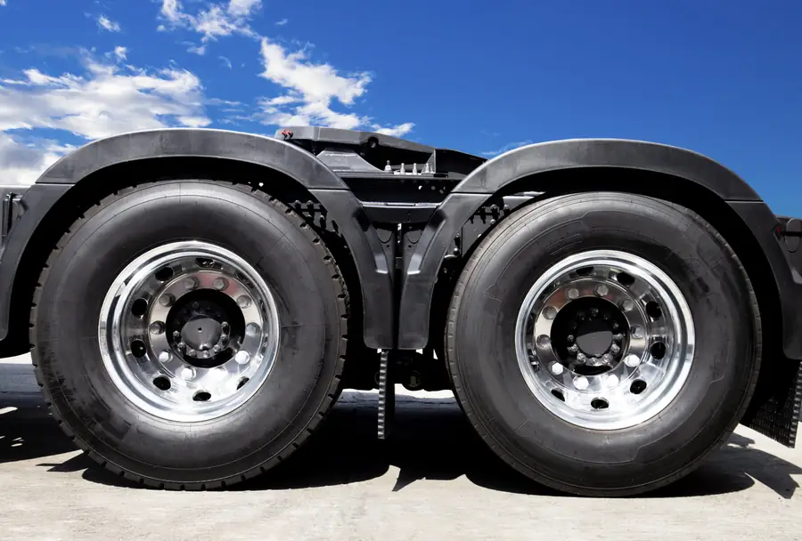

Steer tyres
Rib treads for the front axle: straight tracking, even wear and safe braking on long highway runs.
Steer, drive and trailer tyres for haulage trucks, tippers and light trucks — in stock in Harare and Mutare, with fleet supply and nationwide delivery.
Find your tyre
Tap your size to check stock — we’ll put it straight into the quote form. Running a fleet? Add all your sizes in one request.
315 = width in mm · 80 = sidewall height as % of width · R = radial · 22.5 = rim diameter (tubeless).
12.00 = width in inches · R = radial · 20 = rim in inches — a 20-inch rim usually means tube-type.
What we supply
Rib treads for the front axle: straight tracking, even wear and safe braking on long highway runs.
Block treads that put power down on wet roads and gravel, with deep tread for long mileage.
Low rolling resistance and strong casings for heavy, free-rolling trailer axles — including 385/65R22.5 super singles.
Cut- and chip-resistant compounds for quarries, construction sites and rough rural roads.
17.5-inch and 16-inch tyres for Isuzu, Hino, Fuso and other delivery trucks.
22.5-inch tubeless for modern fleets and 20-inch tube-type for tippers and older trucks.
Fleet operators
Keep your trucks loaded and moving. Send your fleet’s tyre list and we’ll quote steer, drive and trailer tyres in one go — with delivery to your yard.
Get a fleet quote
Why transporters choose Proclassic
Fast quote
Send the size on your tyre’s sidewall (e.g. 315/80R22.5), the axle and quantity. We check stock in Harare and Mutare and reply on WhatsApp with availability and today’s price.
Questions
Not sure which pattern you need? Send a photo of the tyre and tell us the axle — we’ll match it.
Ask on WhatsAppWe supply the main heavy and light truck sizes used in Zimbabwe, including 315/80R22.5, 385/65R22.5, 295/80R22.5, 12R22.5, 13R22.5, 11R22.5, 1200R20, 1100R20, 275/70R22.5, 235/75R17.5, 215/75R17.5 and 7.50R16. Send your size on WhatsApp to confirm today’s stock.
Steer tyres have rib treads for precise steering and even wear on the front axle. Drive tyres have deeper block treads to transfer power and grip on wet or loose surfaces. Trailer tyres are built for free-rolling axles with low rolling resistance and strong sidewalls for scrubbing and heavy loads. Fitting the right tyre to each axle saves fuel and extends tyre life.
315 is the width in millimetres, 80 is the sidewall height as a percentage of the width, R means radial and 22.5 is the rim diameter in inches. Sizes like 1200R20 give the width in inches (12.00) and usually run on 20-inch tube-type rims. You’ll also see a load index and speed rating such as 156/150L.
Yes. We supply 22.5 and 17.5-inch tubeless tyres for modern trucks and trailers, and 20-inch and 16-inch tube-type tyres for tippers, older trucks and rough-road work.
Yes. We quote and supply transport companies, logistics operators and contractors, with bulk pricing on request and delivery to your depot. Choose “10+ (fleet / bulk)” on the quote form.
Yes. We deliver nationwide across Zimbabwe from our Harare and Mutare branches. Tell us your location when you request a quote.
Truck tyre prices change with stock and supply, so we confirm the exact price when you ask. Send your size on WhatsApp and we reply with availability and today’s price.